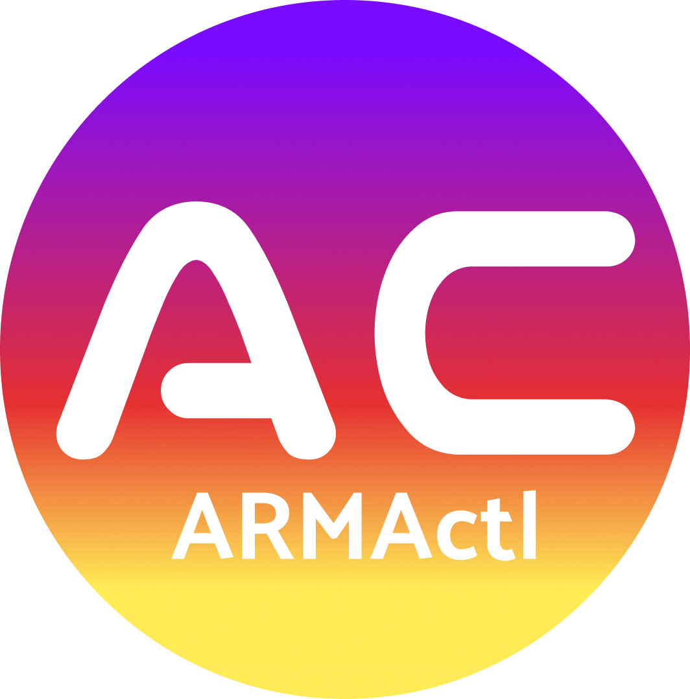

ARMActlInstaller, manager, TUI, and branch web foundation for Arma Reforger Dedicated Server on Ubuntu. Інсталятор, менеджер, TUI та основа web-панелі для виділеного сервера Arma Reforger на Ubuntu. Installateur, gestionnaire, TUI et base web de branche pour le serveur dédié Arma Reforger sur Ubuntu.
armactl is an open-source installer and management tool designed specifically for Arma Reforger Dedicated Servers operating on Ubuntu hosts.
armactl — це інструмент з відкритим вихідним кодом для встановлення та управління, розроблений спеціально для виділених серверів Arma Reforger на хостах Ubuntu.
armactl est un outil d'installation et de gestion open-source conçu spécifiquement pour les serveurs dédiés Arma Reforger fonctionnant sur des hôtes Ubuntu.
It keeps CLI/TUI as reliable fallback paths while the web-interface branch adds browser management foundations for authenticated operators.
Він залишає CLI/TUI надійними резервними шляхами керування, а гілка web-interface додає основу браузерного керування для авторизованих операторів.
Il conserve CLI/TUI comme chemins de secours fiables tandis que la branche web-interface ajoute les bases de gestion navigateur pour les opérateurs authentifiés.
Execute comprehensive server management through a structured, highly responsive TUI designed for specialized server operators.
Виконуйте комплексне управління сервером за допомогою структурованого, високочутливого TUI, розробленого для спеціалізованих операторів.
Exécutez une gestion complète du serveur via un TUI structuré et très réactif, conçu pour les opérateurs de serveurs spécialisés.
Automated server state detection protocols with built-in mechanisms to diagnose and repair structural installation faults.
Автоматизовані протоколи виявлення стану сервера з вбудованими механізмами для діагностики та ремонту структурних помилок встановлення.
Protocoles de détection automatisée de l'état du serveur avec des mécanismes intégrés pour diagnostiquer et réparer les défauts d'installation structurels.
Seamless system integration. Manage daemon states, monitor resource consumption, and ensure high-availability via native systemd hooks.
Безшовна системна інтеграція. Керуйте станами демона, моніторте споживання ресурсів та забезпечуйте високу доступність через нативні хуки systemd.
Intégration système transparente. Gérez les états des démons, surveillez la consommation des ressources et assurez une haute disponibilité via des hooks systemd natifs.
Unified environment for parsing, structuring, and deploying mod configurations to maintain customized server integrity.
Єдине середовище для парсингу, структурування та розгортання конфігурацій модів для підтримки цілісності кастомізованого сервера.
Environnement unifié pour l'analyse, la structuration et le déploiement de configurations de mods afin de maintenir l'intégrité du serveur personnalisé.
The web-interface branch adds authenticated browser management with sessions, CSRF, audit logging, jobs, files, logs, schedule controls, and safe server actions.
Гілка web-interface додає авторизоване керування з браузера: сесії, CSRF, аудит, завдання, файли, логи, розклад і безпечні дії сервера.
La branche web-interface ajoute une gestion navigateur authentifiée avec sessions, CSRF, audit, tâches, fichiers, journaux, planning et actions serveur sûres.
armactl is built on a foundation of utility-driven design, focusing entirely on practical efficiency for high-performance deployments.
armactl побудований на основі утилітарного дизайну, повністю зосереджуючись на практичній ефективності для високопродуктивних розгортань.
armactl est construit sur une base de conception axée sur l'utilité, se concentrant entièrement sur l'efficacité pratique pour les déploiements haute performance.
Designed for real-world server environments, prioritizing speed, reliability, and automated workflows over unnecessary complexity. Створено для реальних серверних середовищ з пріоритетом на швидкість, надійність та автоматизовані робочі процеси замість зайвої складності. Conçu pour les environnements de serveurs réels, privilégiant la vitesse, la fiabilité et les flux de travail automatisés plutôt qu'une complexité inutile.
Every command and configuration change is clearly presented. No black-box operations, ensuring full understanding of all processes. Кожна команда та зміна конфігурації чітко відображається. Жодних прихованих операцій, що гарантує операторам повне розуміння процесів. Chaque commande et modification de configuration est clairement présentée. Aucune opération en boîte noire, garantissant une compréhension totale.
Preserving system stability by avoiding hidden changes, keeping a minimal resource footprint, and leaving the operator in full control. Збереження стабільності системи: уникнення прихованих змін, мінімальне споживання ресурсів та збереження повного контролю за оператором. Préservation de la stabilité du système en évitant les modifications cachées, en maintenant une empreinte minimale sur les ressources et en laissant l'opérateur aux commandes.
Built to scale and adapt. Continuously improved through community feedback to provide robust solutions for complex deployments. Створено для масштабування та адаптації. Постійно вдосконалюється завдяки відгукам спільноти для забезпечення надійних рішень у складних сценаріях. Conçu pour évoluer et s'adapter. Continuellement amélioré grâce aux retours de la communauté pour fournir des solutions robustes pour des déploiements complexes.